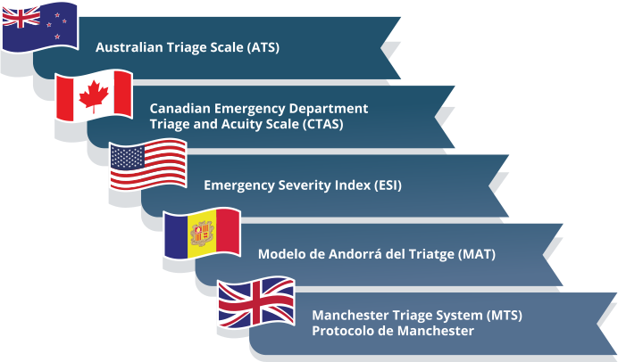

TÓPICO 1
TERRITÓRIO: USOS E APLICAÇÕES NO CAMPO DA SAÚDE
TÓPICO 1
TERRITÓRIO: USOS E APLICAÇÕES NO CAMPO DA SAÚDE
Os demais trabalhadores da equipe não podem fazer a classificação de risco, mas participam da recepção adequada das pessoas com uma escuta qualificada, identificação de situações de maior risco e vulnerabilidade e encaminhamento com maior brevidade possível dos casos que precisam de uma avaliação dos profissionais de saúde de nível superior. Para isso, é fundamental que toda a equipe conheça o fluxo desejável dos usuários na ESF (BRASIL, 2013b).
Internacionalmente os protocolos mais utilizados para classificação de risco são:
